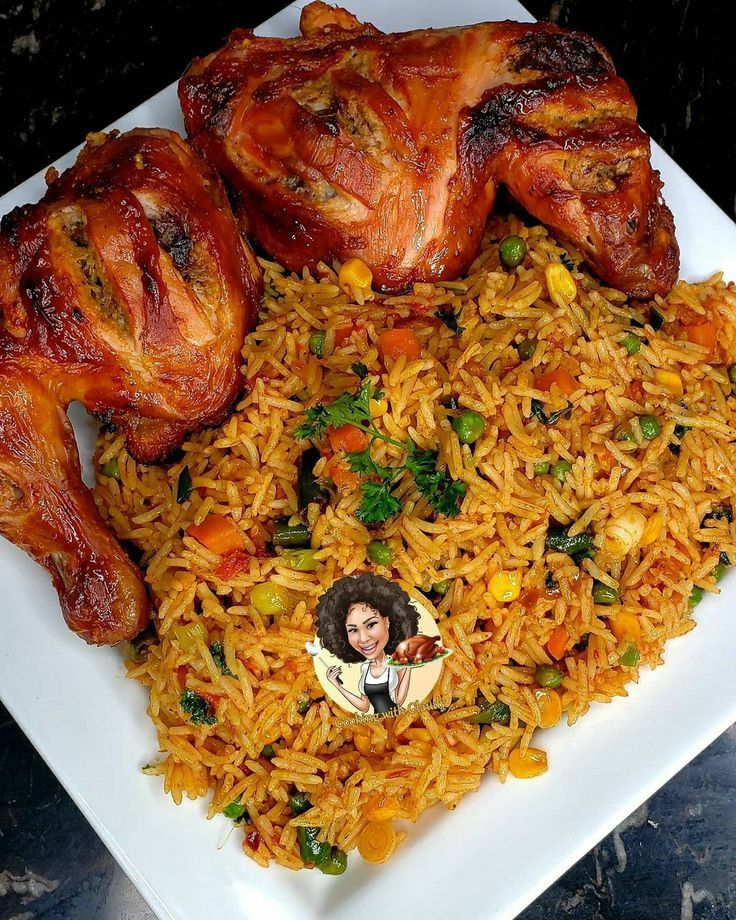

Fried rice recipe

Ingredients
- Cooked rice
- Eggs
- Onions
- Carrots
- Vegetable Oil
- Maggi or Seasoning cubes
- Oyster sauce
- Salt
- Green pepper
- Ginger Sauce
Steps
- Pour some oil into the frying pan and fry two eggs
- Remove the eggs from the pan, pour some small oil and add ginger sauce
- Add portioned rice immeditely after adding the ginger sauce to the boiling pan
- Pour 6 teaspoonsfuls of soy sauce and mix till uniform colour
- Add half of the maggi or seasoning cube to the mixture and sprinkle a pinch of salt to the mixture
- Allow to fry and mix till uniform taste and serve warm.
Homepage